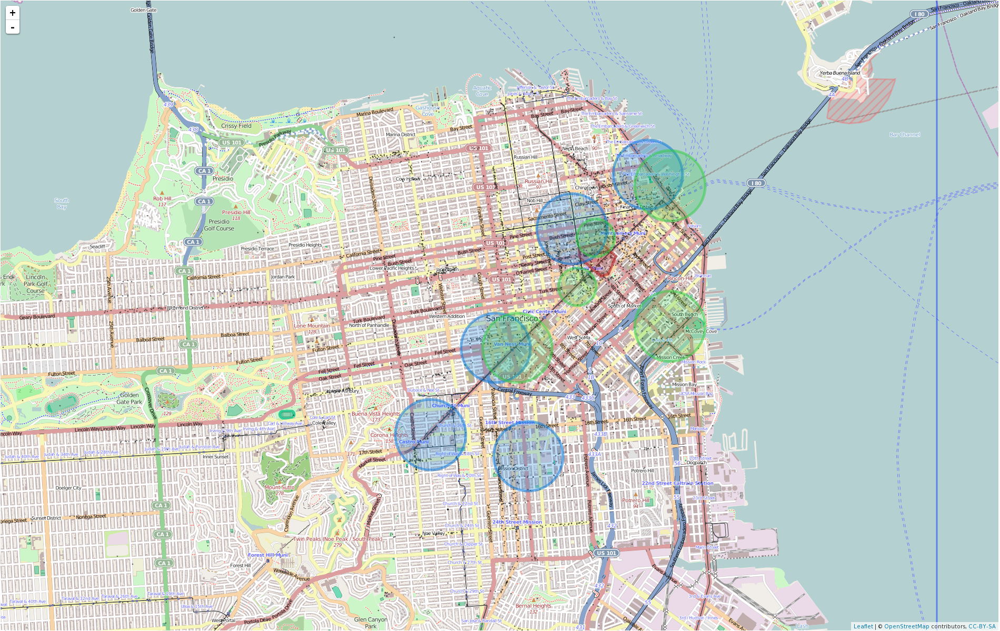
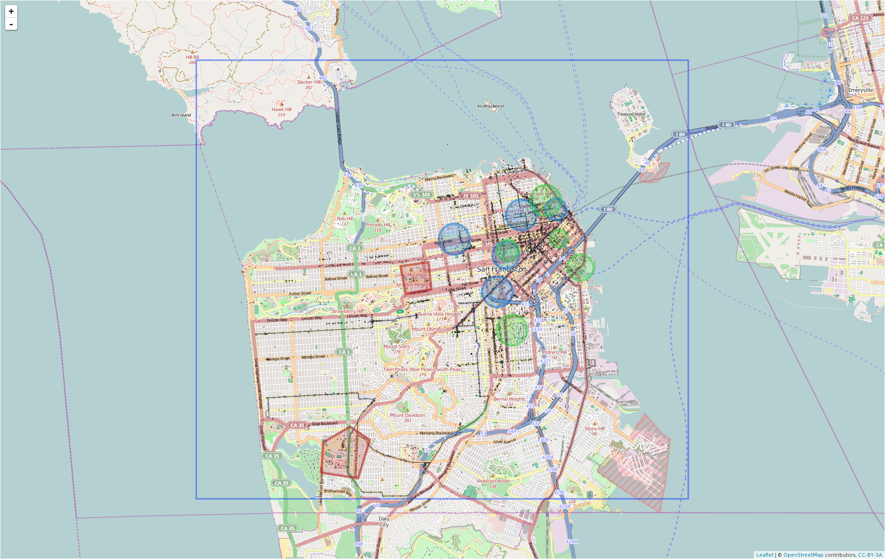
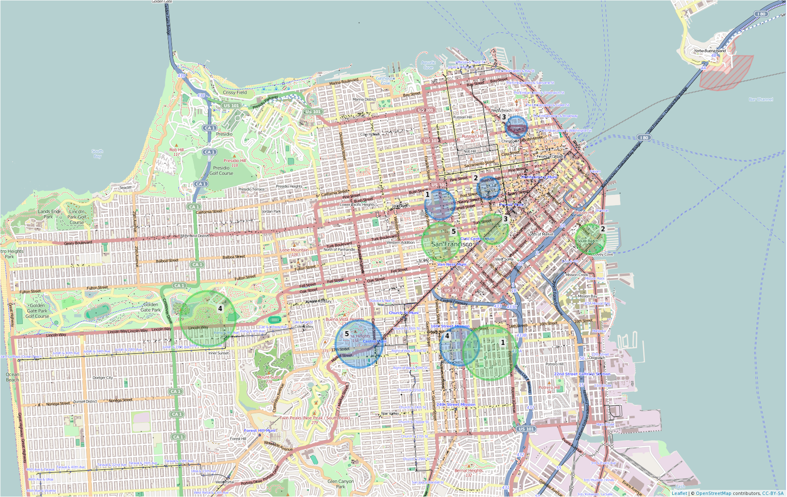
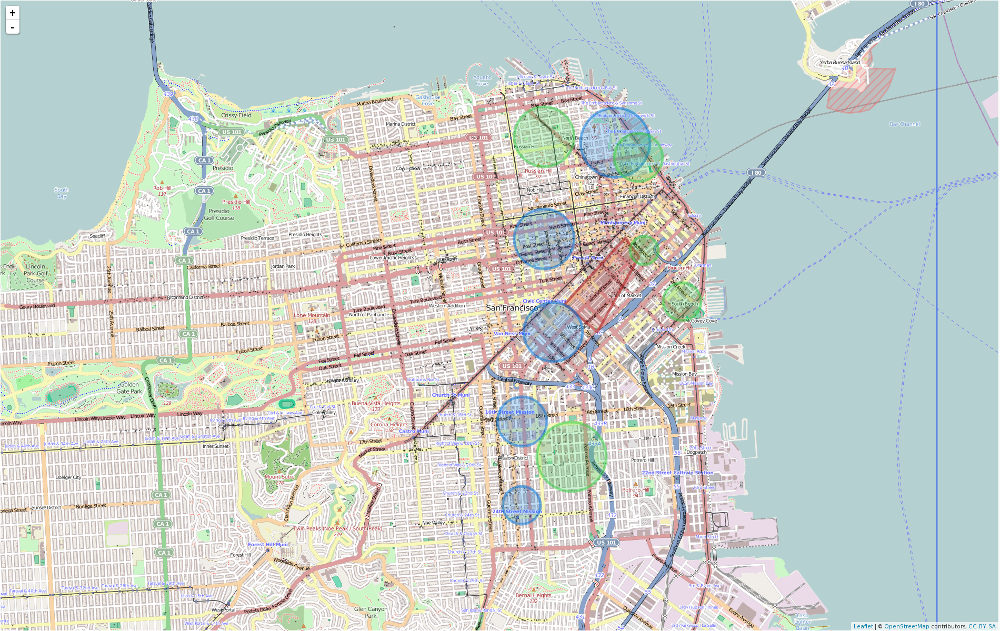
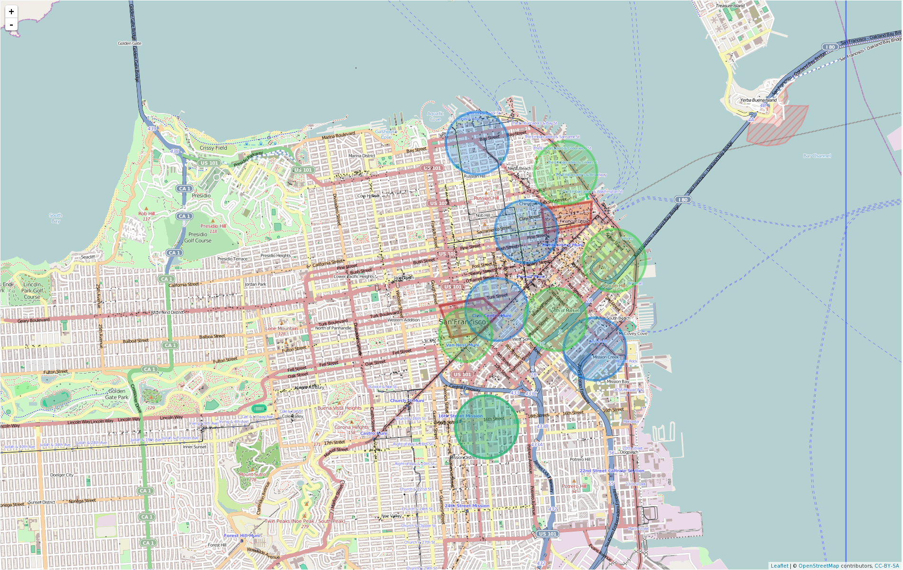
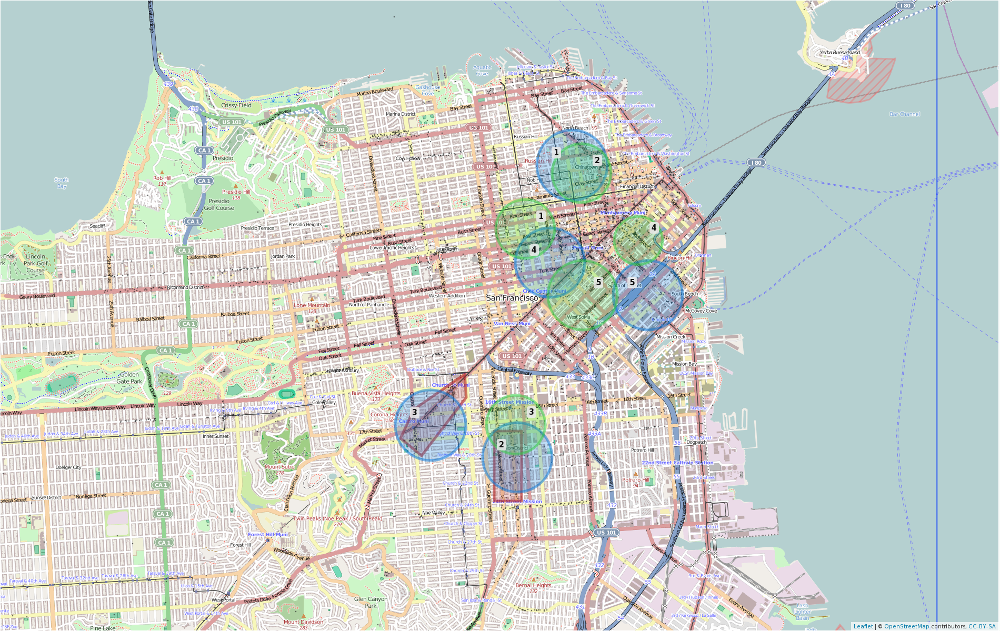

Earth's Mover Distance is in blue, Jenson-Shannon Divergence in green and ground truth in red.
High-end fashion shops and luxurious palaces.
A lot of top higher education institutions and therefore plenty of students.
Red light district.
Touristic spot as well as artsy district.
Presidential palace, national parliament and various ministries.
It has welcomed many minorities throughout history, the last one being homosexuals in the 80s.
It's expensive to buy a house there.

People can relax during the weekend with friends or family, close to the nature.